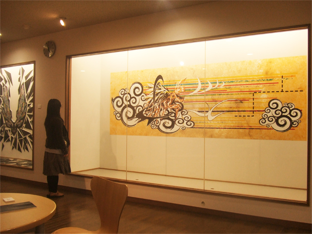
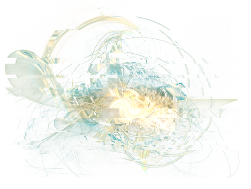

私が再起動展を終えて残された課題は、
「果たして皆は『再起動』できたのだろうか」
という疑問点を解決するところにある。
私が再起動展を終えて残された課題は、
「果たして皆は『再起動』できたのだろうか」
という疑問点を解決するところにある。
今回、土日限定公開作品としての「麒麟」という作品を発表した。
「麒麟」に関する作品の意味性はもちろんあるが、
それ以上にもう一度展覧会に足を運ばすための意味が主たる部分であった。

自分も多々美術館やギャラリーなどで開催される展覧会に足を運ぶが
いかんせん、一回観覧したきりで終わることが多い。（そういうものでもあるが）
今回観覧してくださった方々の中には展覧会自体に行くことが無く
私から宣伝、誘致することがなければ足を運ぶことは無かった、と仰られたくらいだ。
そういう人たちにやはり「動的に」観覧してもらいたいと思い、少々乱暴ではあるが、
土日限定公開という手段を用いて展覧会へと再び足を運んでもらい、
時間を置いて、もう一度新たな目で作品を見直してもらう意味合いを込めていた。

公開する作品自体にも含まれるが、展覧会自体にも通常の枠組みを脱したものを狙った。
そのため作品自体の表現は稚拙なものであったと思われるかもしれないが
やはり既存の枠組みに囚われないものとしての展覧会を作りたいと思っていた。
実験的ではあるが作品販売もひとつの研究として実施をし、なるべく導入もスムーズに入れるよう
私はキュレーター役のように解説役にも徹するなどだいたいの役回りを一人でこなした。
普通に考えればこうした運営自体は当たり前かと思われるだろうが、
実際問題、それを大学生の時期に確実に学べる機会は一切無いものであり
結局のところ作品を作り展示するだけで終わり、いいところで学芸会の形式から脱せていない。
私はそうした現行する美術系大学の問題をどうにかしてゆきたいところがあり、
その部分を解消するために様々な角度から展覧会の運営を既存のものから脱した次第である。
もちろんこの問題は私が再起動展を企画・運営するだけで何とかなるものではない。
継続的な学生プロジェクトの一環として、それでいて窮屈なものにはせず、
私たち美大生の生産者と観覧者である消費者の相互的な文化レベルでの向上をはかりたい。
私自身もそうであるが、この再起動展がひとつのきっかけとして、
作品発表の場としての展覧会の質の向上、個人個人の制作研究の規模拡大、
そして文化的に豊かな指標としての美術を育てていければいいと思う。
皆が、私の意図してくれたところの、再起動をしてくれて、
そうした一つ一つの積み重ねを持ち、良い方向へと変化していってこそ
今回の再起動展が成功するものだと私は考えている。

2011/11
再起動展 主催者
大山奥人